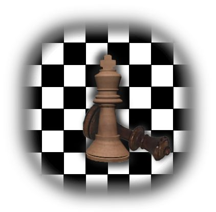
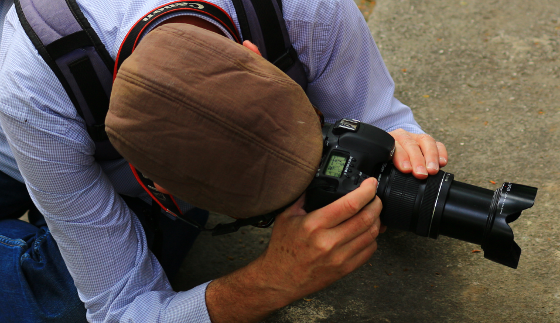
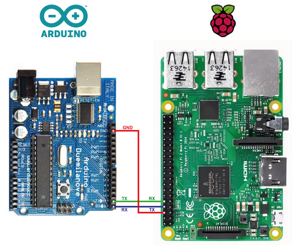

Overview
More
Schach im SK Olten (VM, SMM 3. Liga).
Fotografieren mit der Canon EOS 7d.
Raspberry Pi und Arduino als Zielplattformen der Elektronikentwicklung.
Alles rund um Bahnen, moderne Traktion, Bahnhöfe, nostalgische Lokomotiven und Schienenfahrzeuge.
Wandern zusammen mit meiner Frau.
Weiterbildung an der Senioren UNI und auf freien Internetplattformen wie Socratica
oder CosmosLearning.
More
Schach

Seit bald 50 Jahren Mitglied im SK Olten. Spieler an der Vereinsmeisterschaft und in der SMM (3. Liga).
Foto

Unterwegs mit meiner EOS 7d. Die Kamera ist dabei beim Wandern und Trainspotten. Bei Familienanlässen darf ich meine Fotokünste auch zeigen.
Embedded

Projekte aus der Embeddedwelt entwickle ich auf meinen Raspberry Pi- und Arduino Plattformen. Ich arbeite mit dem Pi B+, Pi2, Pi3 und Zero W. Im Arduinoumfeld verwende ich Uno, Mega, Due, Yun und ESP8266-ESP13 (ESPDuino).
Wandern
Wanderungen rund um Olten, dem Jura und der ganzen Schweiz zusammen mit meiner Frau.